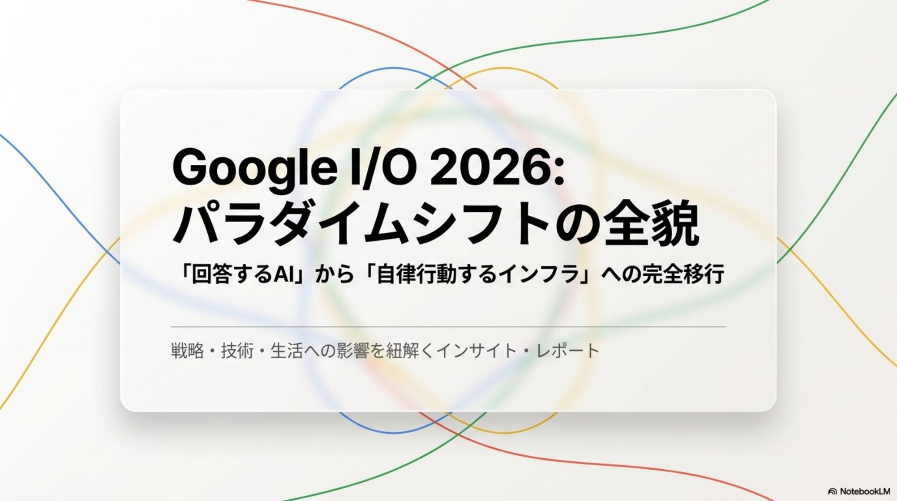
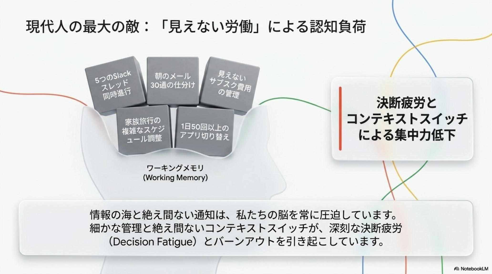
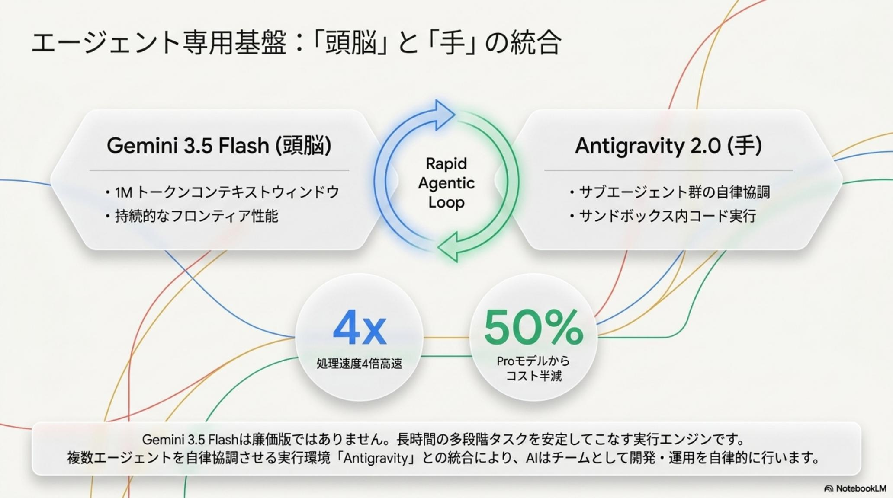
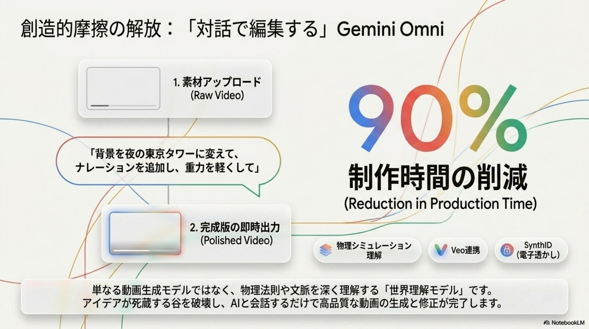
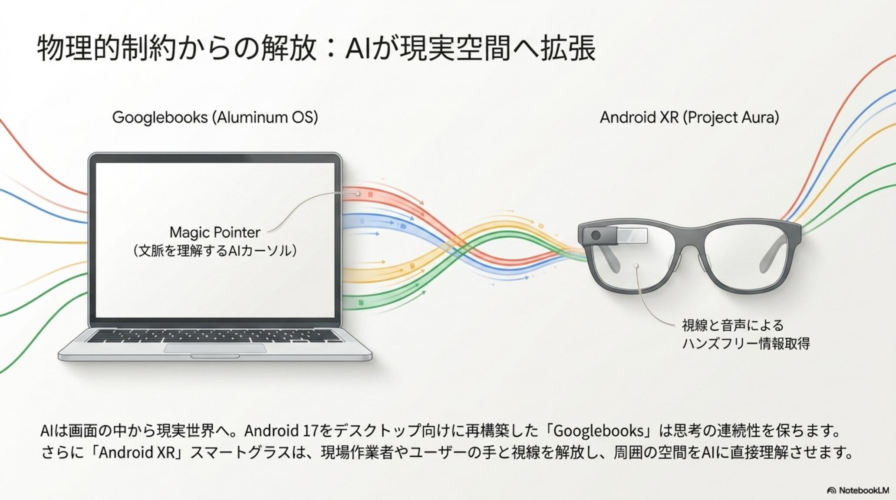
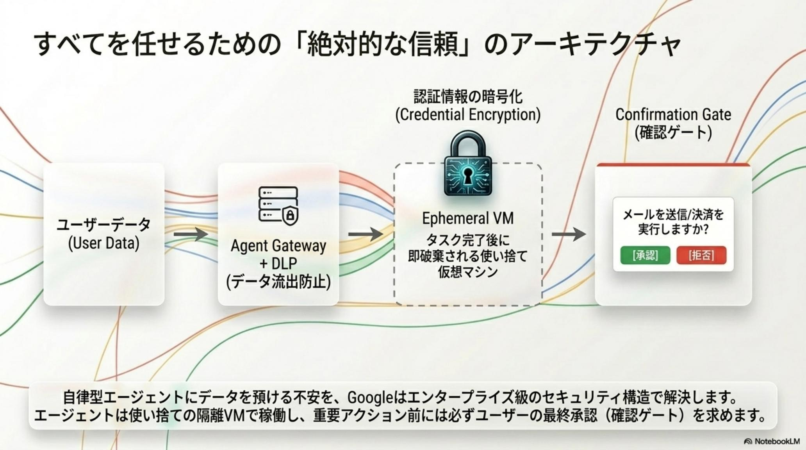
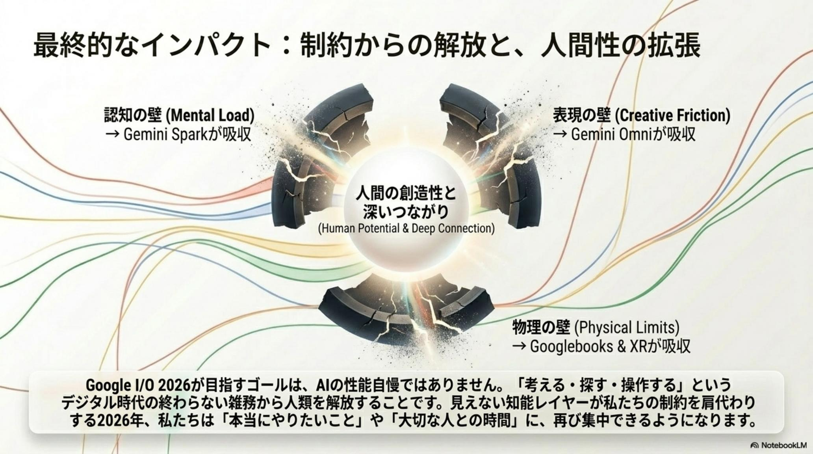
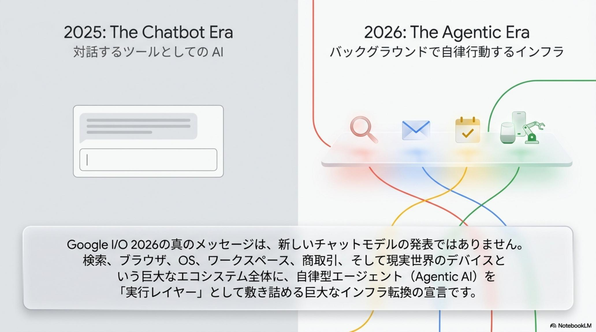

「高性能 AI は高コストで遅い」というトレードオフ
本番導入を阻んでいた高い推論コスト・レイテンシ・長時間タスクの精度劣化。AI エージェントを業務に組み込むには、財務とパフォーマンスの両面で壁が立ちはだかっていた。
Google I/O 2026 · The Agentic Era · Issue № 05/20
2026 年、Google は Gemini を単なるチャットボットから、ビジネスと生活を支える 「知能層（Intelligence Layer）」かつ「実行基盤（Execution Layer）」 へ昇華させた。1,900 億ドル / 年のインフラ投資と月間 3.2 千兆トークン処理が、この変革が実験段階を超えて経済の基幹インフラになったことを裏付ける。
Gemini 3.5 Flash × Antigravity 2.0 × Gemini Spark × Gemini Omni × Googlebooks（Aluminum OS）+ Android XR（Project Aura）× Search Agents + Universal Cart + AP2 + WebMCP。

従来のコンピューティングはユーザーが「検索して自分でやる」ことを前提にしていた。Agentic Era では AI がユーザーの文脈を理解し、クラウド上で 24 時間 365 日タスクを完遂する。これは現代人が直面する「認知負荷（Mental Load）」からの解放を意味するパラダイムシフトだ。

プロフェッショナルは 1 日平均50 回以上のアプリ切り替えに伴うコンテキストスイッチング疲労に晒されている。Agentic Era が解こうとするのは、現代社会に蓄積された「見えない労働」と摩擦の総和だ。
本番導入を阻んでいた高い推論コスト・レイテンシ・長時間タスクの精度劣化。AI エージェントを業務に組み込むには、財務とパフォーマンスの両面で壁が立ちはだかっていた。
ワーキングメモリを圧迫する「見えない労働」——メール確認、複雑な旅行計画、サブスク管理、忘却への不安。1 日数時間がこの摩擦に溶ける。
「アイデアはあるが形にできない」というスキルの壁と、物理法則を無視した不自然な生成によるクオリティの限界。制作時間と数十万円の外注費が創造性を縛ってきた。
比較・在庫確認・複雑な決済が積み重なる高い摩擦係数。一方で SEO は「人間にページを読ませる」前提のままで、エージェント時代の購買行動に対応できていない。

Google は「高性能 AI は高コストで遅い」というトレードオフを、Sustained Frontier Performance（持続的フロンティア性能）を誇る Gemini 3.5 Flash で破壊した。1M トークンの巨大コンテキスト窓と Antigravity 2.0 連携により、Pro 級の知能が Flash の速度とコストで提供される。
エージェント実行基盤 Antigravity 2.0 は Managed Agents API により隔離された Linux 環境でステートフルな実行を可能にし、Terminal-Bench 76.2% / MCP Atlas 83.6% という圧倒的ベンチマークを背景に、AlphaZero の論文理解からゲーム実装までをわずか 6 時間で完遂する自律性を実現する。レガシーコードの Next.js 自動変換のような重厚なリファクタリングも並列処理される。
Google I/O 2026 が提示したのは、Gemini を中核とした「インテリジェントエコシステム」による社会構造のリセットだ。実行エンジン・個人エージェント・クリエイティブ・物理 UI・コマースの 5 レイヤーが横断的に統合される。
新世代エンジンとして Gemini 3.5 Flash + Antigravity 2.0、個人の見えない労働を肩代わりする Gemini Spark、物理法則を理解する世界モデル Gemini Omni、デスクトップ／空間 UI を再定義する Googlebooks + Android XR、検索を自律型コマースへ変える Search Agents + Universal Cart + AP2 + WebMCP。5 つの柱がそれぞれ別の人の負担を解放する。




エージェント時代は、企業に2 つの戦略的転換を強いる。1 つは課金体系がプロンプト回数ベースから 「計算量ベース（Compute-used）」へ移行することによる「AI の計算資源ガバナンス」の確立。もう 1 つは SEO（人間向け）から AEO（Agent Engine Optimization） への移行——エージェントが操作しやすい構造を提供することで「エージェントが新たな顧客」となる時代に対応する。
Compute-used 課金は、企業にとって単なるライセンス管理から、AI の計算資源を財務的に管理する新たなガバナンス体制を求める。一方、新標準プロトコル WebMCP の採用により、Web サイトそのものがエージェントにとっての「操作可能なインターフェース」へ変質する。SynthID（不可視透かし）+ C2PA で1,000 億以上の画像に Provenance（出所証明）を標準化し、生成メディアの真正性も担保される。
アーキテクトのセキュリティノート：Gemini Spark の自律実行における最大懸念に対し、Google は Ephemeral VM（一時的 VM）によるデータの完全隔離と、決済や送信前に必ず人間の承認を挟む Confirmation Gate を実装した。Provenance（出所証明）の標準化（SynthID + C2PA）と組み合わせれば、エンタープライズが生成 AI を本番投入する際のリスクは大幅に低減される。
Google I/O 2026 が告げる地殻変動に対し、企業が今すぐ取るべき3 つの戦略的アクションがある。AI の再定義から計算資源ガバナンス、そして AEO 対応まで——立場ごとに最初の一歩は変わる。
AI を「回答者」ではなく、権限を持つ「実務家」として再定義する。Managed Agents API で隔離 Linux 環境でのステートフル実行を許可する範囲・権限を明文化する。
「Compute-used」課金への移行に伴い、AI の利用効率を財務的に管理する新たなガバナンス体制を構築。Spark の Compute 予算を組織別・プロジェクト別に上限設定する。
WebMCP を早期導入し、エージェントに「選ばれる」ためのデータ構造化を最優先課題に。商品在庫・価格・仕様の機械可読化と Universal Cart 互換性を確保する。
Gemini Omni 利用時は SynthID + C2PA を必須に。生成メディアの出所証明を全社ポリシーで明文化し、ブランド毀損リスクを最小化する。

人類が「考える・探す・操作する」という低次の摩擦から解放され、1 日数時間の「自由」を手にしたとき、その空白をいかに高次な意思決定や創造的な価値へ転換できるかが、これからの勝者を決定づける。
Agentic Era が約束するのは「効率化」ではなく「解放」だ。事務的タスクは Spark が、コーディングは Antigravity が、クリエイティブは Omni が、物理 UI は Aluminum OS と Project Aura が、コマースは Universal Cart が——それぞれ別の摩擦を肩代わりする。残された時間で、人間は本質的な意思決定・創造・関係構築に向き合う。

Google I/O 2026 は単なる新製品発表ではなく、「AI を借りる」から「AI に働かせる」への構造転換だ。立場ごとに最初の一歩は変わる。
Antigravity 2.0 の Managed Agents API で隔離 Linux 環境のステートフル実行を導入。レガシーコードの Next.js 自動変換から始め、Compute-used 課金に対応した AI 計算資源ガバナンス（部門別・案件別予算上限）を構築する。
Gemini Spark を Google AI Ultra（$100〜$200/月）で導入し、サブスク検出・予算 15 万円以内の家族旅行ドラフト・学校メール抽出・家族カレンダー自動共有まで委譲。Confirmation Gate で決済・送信前は必ず人間承認を残す。
Gemini Omni で動画制作時間を 90%+ 削減。Nano Banana エンジンでオブジェクト単位の編集と、対話形式での「背景を夜景に」「ナレーションを自分の声で」を実現。SynthID + C2PA で Provenance を必須化しブランド毀損を防ぐ。
WebMCP の早期導入と Universal Cart 互換性を最優先課題に。商品在庫・価格・仕様を機械可読化し、AP2（Agent Payments Protocol）に対応することで「エージェントに選ばれる」ブランドへ転換する。
AI が 24 時間あなたの代わりに働き、認知負荷が消滅したとき、あなたはその自由になった時間で、何を創造しますか？— Google I/O 2026 / The Agentic Era · 2026-05-20